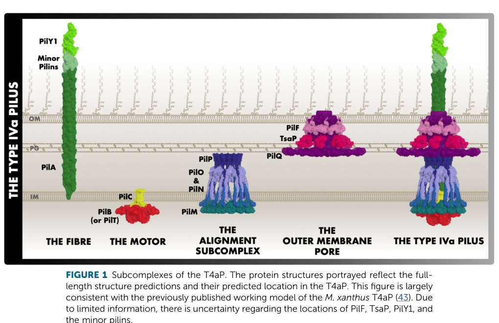

PilA (PP_0634) is the major type IV pilin of Pseudomonas putida KT2440, the principal structural subunit that polymerizes into type IV pili (T4P) — dynamic, retractile filaments on the bacterial cell surface. It belongs to the N-methyl-phenylalanine (type IVa) pilin family, with a hydrophobic N-terminal alpha-helix (a predicted transmembrane segment) that mediates subunit packing within the filament core, and a globular C-terminal head bearing a conserved disulfide-bonded loop. Like other T4a pilins, it is synthesized as a prepilin whose leader peptide is cleaved and whose new N-terminal phenylalanine is N-methylated by the prepilin peptidase PilD before the mature subunit is stored in the inner membrane and assembled into the filament. Cycles of pilus extension and retraction allow the assembled type IV pilus to mediate surface adhesion, twitching motility, microcolony and biofilm formation, and, in many species, DNA uptake during natural transformation. In P. putida, pilin expression is induced upon surface attachment and biofilm growth, consistent with a role in surface colonization.
| GO Term | Evidence | Action | Reason |
|---|---|---|---|
|
GO:0007155
cell adhesion
|
IEA
GO_REF:0000002 |
ACCEPT |
Summary: Type IV pili are adhesive surface filaments, and the major pilin PilA mediates attachment to surfaces and other cells. Cell adhesion is a genuine, if general, function of this protein.
Reason: Adhesion is a well-established function of type IV pili and of the major pilin subunit. The InterPro2GO inference from the Pilin domain (IPR001082) is biologically appropriate, and surface-attachment-induced pilin expression in P. putida supports an adhesion role. The term is general but not incorrect; a more specific adhesion-during-biofilm term could be considered if experimental evidence in KT2440 were available.
|
|
GO:0009289
pilus
|
IEA
GO_REF:0000002 |
MODIFY |
Summary: PilA is the major structural subunit of a pilus, so the pilus localization is correct. However, PilA specifically forms a type IV pilus (N-methyl-phenylalanine pilin family), for which a more precise term exists.
Reason: The generic "pilus" term is correct but under-specific. PilA belongs to the N-Me-Phe (type IVa) pilin family and assembles into a type IV pilus, so the more informative child term GO:0044096 (type IV pilus) better captures the localization.
Proposed replacements:
type IV pilus
|
|
GO:0015627
type II protein secretion system complex
|
IEA
GO_REF:0000002 |
REMOVE |
Summary: This annotation derives from the InterPro pilin-domain mapping (IPR000983, GSPG_pilin), which is shared between type IV major pilins and the pseudopilins of the type II secretion system. PilA is a type IV pilin, not a T2SS pseudopilin, so it is not part of the type II secretion system complex.
Reason: The T4P major pilin and T2SS major pseudopilin share an ancestral pilin fold and InterPro signature, which causes InterPro2GO to over-propagate T2SS terms onto type IV pilins. PilA (PP_0634) is the major pilin of the type IV pilus system; its structural component is the type IV pilus, not the T2SS complex. This is a domain-homology over-annotation and should be removed.
|
|
GO:0015628
protein secretion by the type II secretion system
|
IEA
GO_REF:0000002 |
REMOVE |
Summary: Same InterPro2GO artifact as the T2SS complex annotation. PilA is a type IV pilin and does not function in type II protein secretion.
Reason: This BP term is inferred from the shared pilin/pseudopilin domain signature and does not reflect PilA's actual role. PilA builds the type IV pilus and participates in type IV pilus assembly and twitching motility, not type II secretion. Remove as a domain-homology over-annotation; the appropriate processes (type IV pilus assembly, type IV pilus-dependent motility) are proposed as new terms.
|
Q: Does PilA (PP_0634) deletion in KT2440 abolish twitching motility and reduce surface attachment/biofilm formation, as expected for a major type IV pilin?
Q: How is the KT2440 type IV pilus assembled given the reported absence of the canonical assembly ATPase PilB, and is xcpR (or another ATPase) functionally substituting?
Experiment: Construct a markerless pilA (PP_0634) deletion in KT2440 and assay twitching motility (subsurface stab/agar interstitial assay), surface adhesion, and biofilm formation, with complementation to confirm specificity.
Experiment: Verify PilA maturation by detecting N-terminal N-methylation/leader cleavage (mass spectrometry on purified pili) and confirm surface pilus assembly by immuno-EM or pilus shearing/Western blot.
The research report should be a detailed narrative explaining the function, biological processes, and localization of the gene product. Citations should be given for all claims.
You should prioritize authoritative reviews and primary scientific literature when conducting research. You can supplement
this with annotations you find in gene/protein databases, but these can be outdated or inaccurate.
We are specifically interested in the primary function of the gene - for enzymes, what reaction is catalyzed, and what is the substrate specificity? For transporters, what is the substrate? For structural proteins or adapters, what is the broader structural role? For signaling molecules, what is the role in the pathway.
We are interested in where in or outside the cell the gene product carries out its function.
We are also interested in the signaling or biochemical pathways in which the gene functions. We are less interested in broad pleiotropic effects, except where these elucidate the precise role.
Include evidence where possible. We are interested in both experimental evidence as well as inference from structure, evolution, or bioinformatic analysis. Precise studies should be prioritized over high-throughput, where available.
The gene symbol pilA is highly ambiguous across bacteria; here the target is UniProt Q88Q62 from Pseudomonas putida strain KT2440 (ATCC 47054 / DSM 6125 / NCIMB 11950). In the retrieved literature, PP_0634 in KT2440 is explicitly mapped as the ortholog of Pseudomonas aeruginosa pilA (major type IV pilin gene) in a type IV pili/adherence gene mapping table, supporting that KT2440 PP_0634 encodes PilA. (udaondo2025transcriptionalregulatorysystems pages 12-14)
A sequence-comparison study of type IVa pilins includes a P. putida KT2440 entry (accession NP_742795) among “other bacteria with type IVa pilin genes,” consistent with PilA of KT2440 being a type IVa pilin-family protein and aligning with the UniProt description of Q88Q62 as Pilin. (harvey2009singleresiduechangesin pages 4-5)
Within the retrieved full texts, I did not find direct KT2440 experiments (e.g., KT2440 pilA knockout/complementation) that quantify PilA-dependent twitching motility, adhesion, biofilm formation, or competence. Therefore, KT2440-specific molecular identity is directly supported, while functional/mechanistic annotation relies heavily on conserved, well-established type IVa pilus (T4aP) biology from authoritative reviews and Pseudomonas model systems, supplemented by a primary Pseudomonas putida paper (strain GB-1) directly describing PilD/PilA processing and methylation and noting relevant gene clusters in KT2440. (vrind2003identificationofa pages 2-3, vrind2003identificationofa pages 1-2)
Type IV pili (T4P) are members of the broader type 4 filament (T4F) superfamily: filamentous polymers made of type 4 pilin subunits assembled by a conserved multi-protein machinery. Core conserved components include the pilin(s), a prepilin peptidase, an extension ATPase, and a platform protein; addition of a PilT-like retraction motor enables retraction in retractile systems. (pelicic2023mechanismofassembly pages 2-3, pelicic2023mechanismofassembly pages 5-6)
PilA denotes the major pilin (major structural subunit) of type IVa pili in many Gram-negative bacteria, including Pseudomonas model systems; large numbers of PilA monomers polymerize to form the extracellular pilus fiber. (mccallum2019thedynamicstructures pages 1-3, singh2022landmarkdiscoveriesand pages 9-10, jacobsen2020structureandfunction pages 1-3)
Type IV pilins are synthesized as prepilins carrying an N-terminal leader peptide (“SPIII signal peptide” in T4F terminology). A dedicated inner-membrane prepilin peptidase—classically PilD in many bacteria—cleaves the leader peptide to yield the mature pilin that can be assembled into pili; PilD is frequently described as bifunctional, also catalyzing N-terminal methylation of the newly exposed N-terminus. (mccallum2019thedynamicstructures pages 1-3, singh2022landmarkdiscoveriesand pages 9-10)
In Pseudomonas aeruginosa, primary mechanistic work emphasizes that PilD cleavage is required for assembly, whereas N-terminal methylation is conserved but can be not strictly required for pilus assembly in certain settings. (kuchma2022surfaceinducedcampsignaling pages 1-2)
Primary function (best-supported): PilA (Q88Q62 / PP_0634) is inferred to be the major pilin subunit that polymerizes into the extracellular type IV pilus filament in P. putida KT2440, based on direct mapping of PP_0634 to pilA within a type IV pili/adherence gene set and sequence-family placement among type IVa pilins. (udaondo2025transcriptionalregulatorysystems pages 12-14, harvey2009singleresiduechangesin pages 4-5)
Protein family/domain consistency (literature-based): The KT2440 PilA sequence is treated as a type IVa pilin in comparative analysis of a characteristic C-terminal disulfide-bonded loop region across pilins, consistent with a PilA-like fold. (harvey2009singleresiduechangesin pages 4-5)
Authoritative structural reviews describe pilins as being stored in the inner membrane after synthesis/processing, where they serve as a reservoir of subunits for pilus assembly. (mccallum2019thedynamicstructures pages 1-3)
Upon polymerization, PilA subunits form a surface-exposed pilus fiber that is extruded through an outer-membrane secretin pore (PilQ in Pseudomonas systems). (tala2022characterizationofpseudomonas pages 15-21, mccallum2019thedynamicstructures media 6fa112b3)
Direct Pseudomonas putida evidence (strain GB-1) states that xcpA (also called pilD) encodes a leader peptidase (prepilin peptidase) required for processing and methylation of the PilA prepilin precursor; it also notes that the unannotated KT2440 genome contains related secretion/pilus gene clusters. This supports the inference that KT2440 PilA is matured by a PilD-like prepilin peptidase. (vrind2003identificationofa pages 2-3, vrind2003identificationofa pages 1-2)
More broadly, pilin maturation is described as: (i) insertion/targeting such that the prepilin is positioned in the inner membrane, (ii) PilD cleavage of the leader peptide, and (iii) N-terminal methylation of the newly exposed amino terminus by PilD in systems possessing the methylase domain. (mccallum2019thedynamicstructures pages 1-3, singh2022landmarkdiscoveriesand pages 9-10, pelicic2023mechanismofassembly pages 5-6)
T4aP biogenesis requires a conserved envelope-spanning apparatus, including:
- PilC (platform protein) and ATPases for dynamics: PilB for extension/polymerization and PilT/PilU for retraction/depolymerization in P. aeruginosa systems. (kuchma2022surfaceinducedcampsignaling pages 1-2, tala2022characterizationofpseudomonas pages 15-21)
- The PilMNOP alignment/stabilization complex and PilQ secretin pore for outer-membrane transit. (tala2022characterizationofpseudomonas pages 15-21, mccallum2019thedynamicstructures media 6fa112b3)
A structural review provides filament parameters and emphasizes how the PilA N-terminal α-helix packs into a hydrophobic core in the assembled filament while other loops are surface exposed, supporting PilA’s role as a structural subunit optimized for extracellular interaction. (mccallum2019thedynamicstructures pages 1-3)
T4P systems are classically implicated in twitching motility, adhesion, DNA uptake (competence), and biofilm-related behaviors across many bacteria. (singh2022landmarkdiscoveriesand pages 5-7, jacobsen2020structureandfunction pages 1-3)
In P. aeruginosa, T4P retraction is also linked to surface-sensing signaling (cAMP induction), and PilT-driven retraction is required and sufficient for robust surface-dependent cAMP signaling in one mechanistic study. While this is not KT2440-specific, it provides an example of how PilA-containing pili can couple mechanical engagement to signaling. (kuchma2022surfaceinducedcampsignaling pages 1-2)
A 2023 review synthesizes a holistic mechanistic model of T4F assembly, emphasizing conserved components (prepilin peptidase, extension ATPase, platform) and the role of PilT-like motors in enabling retractile behavior. This kind of synthesis is directly relevant when functionally annotating PilA homologs in non-pathogenic environmental bacteria (like P. putida KT2440) because it clarifies which aspects of function can be inferred from conserved machinery. (pelicic2023mechanismofassembly pages 2-3, pelicic2023mechanismofassembly pages 5-6)
A 2024 review on the genomic diversity of the Pseudomonas putida group notes (at a group level) the presence of type IV pili assembly genes and indicates their importance for adhesion to surfaces. While not specific to PP_0634, it supports the ecological relevance of T4P in P. putida group lifestyles. (vrind2003identificationofa pages 2-3)
A 2024 applied study engineered P. putida (strain PCL1760, not KT2440) by deleting genes including pilQ (outer-membrane secretin of T4P systems) along with flhA and algA, aiming to reduce motility/biofilm burdens in bioreactors. This is a real-world implementation demonstrating industrial motivation to modulate pili-related functions, even though it does not directly probe PilA. (frolov2024constructionofthe pages 1-2)
In the 2024 fermentation-focused work, deletion of genes involved in alginate, flagellar export, and pili formation (including pilQ) reduced biofilm formation by ~40% after 72 h and increased viable counts in bioreactor-like growth conditions (see §5 for numerical data). This illustrates a practical application of manipulating surface-attachment/motility machinery (where PilA is the major pilus subunit) to improve industrial robustness. (frolov2024constructionofthe pages 1-2)
Although focused on P. aeruginosa, contemporary mechanistic studies and reviews emphasize that T4P can act as mechanosensors, transmitting force through the pilus to regulate second-messenger pathways (cAMP or c-di-GMP) during early surface colonization. Such frameworks inform hypotheses for environmental pseudomonads including KT2440. (kuchma2022surfaceinducedcampsignaling pages 1-2)
From a structural review of T4aP:
- The assembled filament’s helical parameters are reported as a helical rise ≈10 Å and twist 80–100° in structural analyses. (mccallum2019thedynamicstructures pages 1-3)
From a major review summarizing the field:
- Single pilus retraction forces have been reported up to ~80 pN, consistent with powerful mechanical functions such as surface motility and mechanosensing. (singh2022landmarkdiscoveriesand pages 5-7)
In P. putida PCL1760 derivatives with pilQ (plus flhA, algA) deleted:
- Biofilm formation was 40% lower after 72 h. (frolov2024constructionofthe pages 1-2)
- Rich medium bioreactor-like growth: 1.39 × 10^10 CFU/mL (mutant) vs 6.4 × 10^9 CFU/mL (wild type). (frolov2024constructionofthe pages 1-2)
- Mineral medium bioreactor-like growth: 6.11 × 10^9 CFU/mL (mutant) vs 1.36 × 10^9 CFU/mL (wild type). (frolov2024constructionofthe pages 1-2)
These data demonstrate the magnitude of performance changes possible when modifying surface-appendage pathways related to type IV pili. (frolov2024constructionofthe pages 1-2)
Authoritative reviews converge on the concept that the major pilin (PilA) is the foundational building block of a retractable nanofiber that supports multiple behaviors (twitching, adhesion, competence, biofilm dynamics), and that its conserved maturation (PilD cleavage ± methylation) is essential to make subunits assembly-competent. (mccallum2019thedynamicstructures pages 1-3, singh2022landmarkdiscoveriesand pages 9-10, jacobsen2020structureandfunction pages 1-3)
Recent Pseudomonas-focused mechanistic work frames T4P not only as a motility machine but as an input into intracellular signaling cascades (e.g., surface-induced cAMP) and emphasizes disentangling which pilus features are required for signaling versus motility. This is important for functional annotation because it argues that PilA-containing pili can have separable roles beyond locomotion (e.g., sensing and regulation). (kuchma2022surfaceinducedcampsignaling pages 1-2)
A widely used architectural schematic of the type IVa pilus machine, showing the location of the PilA filament and associated inner-membrane motors/platform and outer-membrane secretin, is available from McCallum et al. (2019). (mccallum2019thedynamicstructures media 6fa112b3)
| Claim/Concept | Evidence summary | Organism/system (KT2440 vs other) | Quantitative data (if any) | Primary source (first author year, journal) | Publication date (month/year) | URL |
|---|---|---|---|---|---|---|
| PP_0634 maps to pilA in Pseudomonas putida KT2440 | Comparative mapping of adherence/type IV pili genes lists P. aeruginosa pilA (PA4525) corresponding to P. putida KT2440 PP_0634, supporting that UniProt Q88Q62/PP_0634 is the KT2440 pilA ortholog (udaondo2025transcriptionalregulatorysystems pages 12-14). | KT2440 | None reported | Udaondo 2025, Int. J. Mol. Sci. | 05/2025 | https://doi.org/10.3390/ijms26104677 |
| KT2440 PilA is a type IVa pilin-family protein | A sequence survey of type IVa pilins includes a P. putida KT2440 entry (NP_742795) among “other bacteria with type IVa pilin genes”; the KT2440 sequence carries the conserved C-terminal disulfide-bonded loop features typical of type IVa pilins (harvey2009singleresiduechangesin pages 4-5). | KT2440 | DSL sequence listed as CTTDIEDDLAPKGC (harvey2009singleresiduechangesin pages 4-5) | Harvey 2009, J. Bacteriol. | 11/2009 | https://doi.org/10.1128/jb.00943-09 |
| PilA is the major pilin subunit of type IV pili | Reviews define PilA as the major pilin/prepilin whose polymerization forms the type IVa pilus fiber; thousands of PilA-like subunits can build a filament (mccallum2019thedynamicstructures pages 1-3, singh2022landmarkdiscoveriesand pages 9-10, jacobsen2020structureandfunction pages 1-3). | Other Pseudomonas / general T4P biology | None specific | McCallum 2019, Microbiol. Spectrum | 04/2019 | https://doi.org/10.1128/microbiolspec.psib-0006-2018 |
| PilA precursor processing requires prepilin peptidase PilD and includes N-terminal methylation | Authoritative reviews and primary studies state that PilA is synthesized as a prepilin with an N-terminal leader peptide that is cleaved by PilD; PilD is bifunctional and methylates the nascent N terminus. Cleavage is essential for pilus biogenesis, whereas methylation is conserved and in some systems not strictly required for assembly (kuchma2022surfaceinducedcampsignaling pages 1-2, pelicic2023mechanismofassembly pages 5-6, singh2022landmarkdiscoveriesand pages 9-10, graupner2000typeivpilus pages 5-6, wellerstuart2015genomicandfunctionala pages 60-63). | Other Pseudomonas / general T4P biology | Prepilin hydrophobic stretch typically 20–25 aa (pelicic2023mechanismofassembly pages 5-6) | Kuchma 2022, J. Bacteriol. | 10/2022 | https://doi.org/10.1128/jb.00186-22 |
| Direct P. putida evidence linking PilD to PilA processing/methylation | In P. putida GB-1, xcpA/pilD is described as a leader peptidase (prepilin peptidase) required for processing and methylation of the PilA prepilin; the paper also notes that KT2440 contains related Xcp/Gsp-like clusters, supporting the presence of cognate maturation machinery in P. putida genomes (vrind2003identificationofa pages 2-3, vrind2003identificationofa pages 1-2). | P. putida GB-1 with mention of KT2440 gene clusters | None reported | De Vrind 2003, Mol. Microbiol. | 02/2003 | https://doi.org/10.1046/j.1365-2958.2003.03339.x |
| Localization and architecture of the T4P machine relevant to PilA function | Pilins are stored in the inner membrane before assembly; assembled pili extend through the outer-membrane secretin PilQ. The motor/platform subcomplex includes PilC with ATPases PilB (extension) and PilT/PilU (retraction), while PilMNOP stabilizes the envelope-spanning apparatus (mccallum2019thedynamicstructures pages 1-3, kuchma2022surfaceinducedcampsignaling pages 1-2, tala2022characterizationofpseudomonas pages 15-21, mccallum2019thedynamicstructures media 6fa112b3). | Other Pseudomonas / general T4P biology | Pilus diameter about 6 nm and can extend tens of microns (tala2022characterizationofpseudomonas pages 15-21) | Talà 2022, dissertation | 01/2022 | https://doi.org/10.5075/epfl-thesis-8646 |
| Structural organization of PilA in the filament | PilA has a long N-terminal α-helix and C-terminal globular domain; in assembled pili the α1N helices pack into a hydrophobic core, while the αβ-loop/D-loop are surface exposed and variable, consistent with extracellular interaction roles (mccallum2019thedynamicstructures pages 1-3, singh2022landmarkdiscoveriesand pages 9-10). | Other Pseudomonas / general T4P biology | Helical rise about 10 Å; twist about 80–100° (mccallum2019thedynamicstructures pages 1-3) | McCallum 2019, Microbiol. Spectrum | 04/2019 | https://doi.org/10.1128/microbiolspec.psib-0006-2018 |
| Biophysical output of T4P retraction | T4P retraction is ATP-driven and can generate very large forces; classic and modern measurements summarized in review literature report single-pilus forces up to about 80 pN, supporting roles in twitching motility, surface engagement, and mechanosensing (singh2022landmarkdiscoveriesand pages 5-7). | General T4P biology | Force up to ~80 pN (singh2022landmarkdiscoveriesand pages 5-7) | Singh 2022, MMBR | 09/2022 | https://doi.org/10.1128/mmbr.00076-22 |
| Functional pathway context of PilA | T4P systems support twitching motility, adhesion, biofilm formation, DNA uptake/natural competence, and surface sensing; in P. aeruginosa, PilT-driven retraction is required for robust surface-induced cAMP signaling, illustrating how PilA-containing pili connect mechanics to signaling (kuchma2022surfaceinducedcampsignaling pages 1-2, jacobsen2020structureandfunction pages 1-3, pelicic2023mechanismofassembly pages 2-3, singh2022landmarkdiscoveriesand pages 5-7). | Other Pseudomonas / general T4P biology | Intracellular spread speed reported for WT P. aeruginosa cytosolic twitching >0.05 μm s−1 in one study (kuchma2022surfaceinducedcampsignaling pages 1-2) | Kuchma 2022, J. Bacteriol. | 10/2022 | https://doi.org/10.1128/jb.00186-22 |
| Evidence limit for KT2440-specific phenotypes | Available evidence directly verifies identity/family assignment of PP_0634 as KT2440 PilA, but the gathered sources did not provide a KT2440-specific pilA mutant phenotype for twitching, adhesion, biofilm, or competence; these functions are therefore best treated as family-based inference unless future KT2440 experiments are found (udaondo2025transcriptionalregulatorysystems pages 12-14, harvey2009singleresiduechangesin pages 4-5). | KT2440 | None | Udaondo 2025, Int. J. Mol. Sci.; Harvey 2009, J. Bacteriol. | 05/2025; 11/2009 | https://doi.org/10.3390/ijms26104677 ; https://doi.org/10.1128/jb.00943-09 |
| Applied implementation: engineering pili-related functions for fermentation | A 2024 applied study engineered P. putida PCL1760 by deleting algA, flhA, and pilQ (not pilA) to reduce motility/biofilm. This shows real-world value of targeting T4P biogenesis for industrial strain optimization, though it is not direct evidence on KT2440 PilA itself (frolov2024constructionofthe pages 1-2, frolov2024constructionofthe pages 8-10). | P. putida PCL1760 (not KT2440) | Biofilm 40% lower after 72 h; rich medium 1.39×10^10 vs 6.4×10^9 CFU/mL mutant vs WT; mineral medium 6.11×10^9 vs 1.36×10^9 CFU/mL mutant vs WT (frolov2024constructionofthe pages 1-2, frolov2024constructionofthe pages 8-10) | Frolov 2024, Fermentation | 11/2024 | https://doi.org/10.3390/fermentation10120606 |
| Energetic rationale for appendage engineering | The same applied study cites energetic costs of motility appendages, helping explain why disabling flagellar/pilus systems can improve bioreactor growth; this provides context for why PilA/T4P-related systems matter in biotechnology (frolov2024constructionofthe pages 8-10). | P. putida PCL1760 / broader Pseudomonas context | Flagellar biosynthesis about 2% of biosynthetic resources; rotation about 0.1% of cell energy (frolov2024constructionofthe pages 8-10) | Frolov 2024, Fermentation | 11/2024 | https://doi.org/10.3390/fermentation10120606 |
Table: This table compiles direct KT2440-specific evidence for PP_0634 as pilA together with carefully labeled family-level type IV pilus biology needed for functional annotation. It also includes an applied Pseudomonas implementation example showing why pili-related systems matter in biotechnology.
The most directly relevant sources used above include:
- Udaondo et al., 2025-05, Int. J. Mol. Sci. (PP_0634 ↔ pilA mapping): https://doi.org/10.3390/ijms26104677 (udaondo2025transcriptionalregulatorysystems pages 12-14)
- Harvey et al., 2009-11, J. Bacteriol. (KT2440 pilin sequence in type IVa pilin comparison): https://doi.org/10.1128/jb.00943-09 (harvey2009singleresiduechangesin pages 4-5)
- McCallum et al., 2019-04, Microbiology Spectrum (T4aP structure, PilD processing, filament parameters): https://doi.org/10.1128/microbiolspec.psib-0006-2018 (mccallum2019thedynamicstructures pages 1-3, mccallum2019thedynamicstructures media 6fa112b3)
- Pelicic, 2023-03, Microbiology (T4F assembly mechanisms): https://doi.org/10.1099/mic.0.001311 (pelicic2023mechanismofassembly pages 5-6, pelicic2023mechanismofassembly pages 2-3)
- Singh et al., 2022-09, MMBR (landmarks; force up to ~80 pN): https://doi.org/10.1128/mmbr.00076-22 (singh2022landmarkdiscoveriesand pages 5-7, singh2022landmarkdiscoveriesand pages 9-10)
- Kuchma & O’Toole, 2022-10, J. Bacteriol. (PilA processing, PilB/PilT/PilU, surface-induced cAMP signaling): https://doi.org/10.1128/jb.00186-22 (kuchma2022surfaceinducedcampsignaling pages 1-2)
- De Vrind et al., 2003-02, Mol. Microbiol. (P. putida PilD required for PilA processing/methylation; KT2440 clusters): https://doi.org/10.1046/j.1365-2958.2003.03339.x (vrind2003identificationofa pages 2-3, vrind2003identificationofa pages 1-2)
- Frolov et al., 2024-11, Fermentation (industrial strain engineering targeting pilQ; quantitative outcomes): https://doi.org/10.3390/fermentation10120606 (frolov2024constructionofthe pages 1-2, frolov2024constructionofthe pages 8-10)
References
(udaondo2025transcriptionalregulatorysystems pages 12-14): Zulema Udaondo, Kelsey Aguirre Schilder, Ana Rosa Márquez Blesa, Mireia Tena-Garitaonaindia, José Canto Mangana, and Abdelali Daddaoua. Transcriptional regulatory systems in pseudomonas: a comparative analysis of helix-turn-helix domains and two-component signal transduction networks. International Journal of Molecular Sciences, 26:4677, May 2025. URL: https://doi.org/10.3390/ijms26104677, doi:10.3390/ijms26104677. This article has 1 citations.
(harvey2009singleresiduechangesin pages 4-5): Hanjeong Harvey, Marc Habash, Francisca Aidoo, and Lori L. Burrows. Single-residue changes in the c-terminal disulfide-bonded loop of thepseudomonas aeruginosatype iv pilin influence pilus assembly and twitching motility. Nov 2009. URL: https://doi.org/10.1128/jb.00943-09, doi:10.1128/jb.00943-09. This article has 57 citations and is from a peer-reviewed journal.
(vrind2003identificationofa pages 2-3): Johannes De Vrind, Arjan De Groot, Geert Jan Brouwers, Jan Tommassen, and Elisabeth De Vrind‐de Jong. Identification of a novel gsp‐related pathway required for secretion of the manganese‐oxidizing factor of pseudomonas putida strain gb‐1. Molecular Microbiology, 47:993-1006, Feb 2003. URL: https://doi.org/10.1046/j.1365-2958.2003.03339.x, doi:10.1046/j.1365-2958.2003.03339.x. This article has 65 citations and is from a domain leading peer-reviewed journal.
(vrind2003identificationofa pages 1-2): Johannes De Vrind, Arjan De Groot, Geert Jan Brouwers, Jan Tommassen, and Elisabeth De Vrind‐de Jong. Identification of a novel gsp‐related pathway required for secretion of the manganese‐oxidizing factor of pseudomonas putida strain gb‐1. Molecular Microbiology, 47:993-1006, Feb 2003. URL: https://doi.org/10.1046/j.1365-2958.2003.03339.x, doi:10.1046/j.1365-2958.2003.03339.x. This article has 65 citations and is from a domain leading peer-reviewed journal.
(pelicic2023mechanismofassembly pages 2-3): Vladimir Pelicic. Mechanism of assembly of type 4 filaments: everything you always wanted to know (but were afraid to ask). Mar 2023. URL: https://doi.org/10.1099/mic.0.001311, doi:10.1099/mic.0.001311. This article has 49 citations and is from a peer-reviewed journal.
(pelicic2023mechanismofassembly pages 5-6): Vladimir Pelicic. Mechanism of assembly of type 4 filaments: everything you always wanted to know (but were afraid to ask). Mar 2023. URL: https://doi.org/10.1099/mic.0.001311, doi:10.1099/mic.0.001311. This article has 49 citations and is from a peer-reviewed journal.
(mccallum2019thedynamicstructures pages 1-3): Matthew McCallum, Lori L. Burrows, and P. Lynne Howell. The dynamic structures of the type iv pilus. Apr 2019. URL: https://doi.org/10.1128/microbiolspec.psib-0006-2018, doi:10.1128/microbiolspec.psib-0006-2018. This article has 92 citations and is from a domain leading peer-reviewed journal.
(singh2022landmarkdiscoveriesand pages 9-10): Pradip Kumar Singh, Janay Little, and Michael S. Donnenberg. Landmark discoveries and recent advances in type iv pilus research. Microbiology and Molecular Biology Reviews, Sep 2022. URL: https://doi.org/10.1128/mmbr.00076-22, doi:10.1128/mmbr.00076-22. This article has 37 citations and is from a domain leading peer-reviewed journal.
(jacobsen2020structureandfunction pages 1-3): Theis Jacobsen, Benjamin Bardiaux, Olivera Francetic, Nadia Izadi-Pruneyre, and Michael Nilges. Structure and function of minor pilins of type iv pili. Medical Microbiology and Immunology, 209:301-308, Nov 2020. URL: https://doi.org/10.1007/s00430-019-00642-5, doi:10.1007/s00430-019-00642-5. This article has 118 citations and is from a peer-reviewed journal.
(kuchma2022surfaceinducedcampsignaling pages 1-2): Sherry L. Kuchma and George A. O’Toole. Surface-induced camp signaling requires multiple features of the pseudomonas aeruginosa type iv pili. Oct 2022. URL: https://doi.org/10.1128/jb.00186-22, doi:10.1128/jb.00186-22. This article has 32 citations and is from a peer-reviewed journal.
(tala2022characterizationofpseudomonas pages 15-21): Characterization of Pseudomonas aeruginosa mechanosensing through label-free imaging of type IV pili This article has 1 citations.
(mccallum2019thedynamicstructures media 6fa112b3): Matthew McCallum, Lori L. Burrows, and P. Lynne Howell. The dynamic structures of the type iv pilus. Apr 2019. URL: https://doi.org/10.1128/microbiolspec.psib-0006-2018, doi:10.1128/microbiolspec.psib-0006-2018. This article has 92 citations and is from a domain leading peer-reviewed journal.
(singh2022landmarkdiscoveriesand pages 5-7): Pradip Kumar Singh, Janay Little, and Michael S. Donnenberg. Landmark discoveries and recent advances in type iv pilus research. Microbiology and Molecular Biology Reviews, Sep 2022. URL: https://doi.org/10.1128/mmbr.00076-22, doi:10.1128/mmbr.00076-22. This article has 37 citations and is from a domain leading peer-reviewed journal.
(frolov2024constructionofthe pages 1-2): Mikhail Frolov, Galim Alimzhanovich Kungurov, Emil Elmirovich Valiakhmetov, Artur Sergeyevich Gogov, Natalia Viktorovna Trachtmann, and Shamil Zavdatovich Validov. Construction of the pseudomonas putida strain with low motility and reduced biofilm formation for application in fermentation. Fermentation, 10:606, Nov 2024. URL: https://doi.org/10.3390/fermentation10120606, doi:10.3390/fermentation10120606. This article has 2 citations.
(graupner2000typeivpilus pages 5-6): Stefan Graupner, Verena Frey, Rozita Hashemi, Michael G. Lorenz, Gudrun Brandes, and Wilfried Wackernagel. Type iv pilus genes pila andpilc of pseudomonas stutzeri are required for natural genetic transformation, and pila can be replaced by corresponding genes from nontransformable species. Journal of Bacteriology, 182:2184-2190, Apr 2000. URL: https://doi.org/10.1128/jb.182.8.2184-2190.2000, doi:10.1128/jb.182.8.2184-2190.2000. This article has 79 citations and is from a peer-reviewed journal.
(wellerstuart2015genomicandfunctionala pages 60-63): T Weller-Stuart. Genomic and functional characterization of motility in pantoea ananatis. Unknown journal, 2015.
(frolov2024constructionofthe pages 8-10): Mikhail Frolov, Galim Alimzhanovich Kungurov, Emil Elmirovich Valiakhmetov, Artur Sergeyevich Gogov, Natalia Viktorovna Trachtmann, and Shamil Zavdatovich Validov. Construction of the pseudomonas putida strain with low motility and reduced biofilm formation for application in fermentation. Fermentation, 10:606, Nov 2024. URL: https://doi.org/10.3390/fermentation10120606, doi:10.3390/fermentation10120606. This article has 2 citations.

id: Q88Q62
gene_symbol: pilA
product_type: PROTEIN
status: DRAFT
taxon:
id: NCBITaxon:160488
label: Pseudomonas putida (strain ATCC 47054 / DSM 6125 / CFBP 8728 / NCIMB 11950 / KT2440)
description: PilA (PP_0634) is the major type IV pilin of Pseudomonas putida KT2440, the principal structural subunit that polymerizes into type IV pili (T4P) — dynamic, retractile filaments on the bacterial cell surface. It belongs to the N-methyl-phenylalanine (type IVa) pilin family, with a hydrophobic N-terminal alpha-helix (a predicted transmembrane segment) that mediates subunit packing within the filament core, and a globular C-terminal head bearing a conserved disulfide-bonded loop. Like other T4a pilins, it is synthesized as a prepilin whose leader peptide is cleaved and whose new N-terminal phenylalanine is N-methylated by the prepilin peptidase PilD before the mature subunit is stored in the inner membrane and assembled into the filament. Cycles of pilus extension and retraction allow the assembled type IV pilus to mediate surface adhesion, twitching motility, microcolony and biofilm formation, and, in many species, DNA uptake during natural transformation. In P. putida, pilin expression is induced upon surface attachment and biofilm growth, consistent with a role in surface colonization.
references:
- id: GO_REF:0000002
title: Gene Ontology annotation through association of InterPro records with GO terms
findings: []
- id: PMID:12534463
title: Complete genome sequence and comparative analysis of the metabolically versatile Pseudomonas putida KT2440.
findings: []
reference_review:
relevance: MEDIUM
correctness: VERIFIED
review_notes: Nelson et al. 2002, the KT2440 reference-genome paper establishing the pilA/PP_0634 locus. Confirmed against the UniProt cross-reference (PMID:12534463, DOI 10.1046/j.1462-2920.2002.00366.x, Environ Microbiol 4:799-808).
- id: PMID:11673428
title: Characterization of phenotypic changes in Pseudomonas putida in response to surface-associated growth.
findings: []
reference_review:
relevance: MEDIUM
correctness: VERIFIED
review_notes: Sauer & Camper 2001 (J Bacteriol 183:6579-6589, DOI 10.1128/JB.183.22.6579-6589.2001). PubMed-verified (PMID:11673428); abstract explicitly states "PilA was observed in 12-h biofilms but not in planktonic culture" with type IV pili genes differentially regulated on surface attachment. Supports the adhesion/biofilm role of the pilin at the species level (P. putida, strain not KT2440).
existing_annotations:
- term:
id: GO:0007155
label: cell adhesion
evidence_type: IEA
original_reference_id: GO_REF:0000002
qualifier: involved_in
review:
summary: Type IV pili are adhesive surface filaments, and the major pilin PilA mediates attachment to surfaces and other cells. Cell adhesion is a genuine, if general, function of this protein.
action: ACCEPT
reason: Adhesion is a well-established function of type IV pili and of the major pilin subunit. The InterPro2GO inference from the Pilin domain (IPR001082) is biologically appropriate, and surface-attachment-induced pilin expression in P. putida supports an adhesion role. The term is general but not incorrect; a more specific adhesion-during-biofilm term could be considered if experimental evidence in KT2440 were available.
- term:
id: GO:0009289
label: pilus
evidence_type: IEA
original_reference_id: GO_REF:0000002
qualifier: located_in
review:
summary: PilA is the major structural subunit of a pilus, so the pilus localization is correct. However, PilA specifically forms a type IV pilus (N-methyl-phenylalanine pilin family), for which a more precise term exists.
action: MODIFY
reason: The generic "pilus" term is correct but under-specific. PilA belongs to the N-Me-Phe (type IVa) pilin family and assembles into a type IV pilus, so the more informative child term GO:0044096 (type IV pilus) better captures the localization.
proposed_replacement_terms:
- id: GO:0044096
label: type IV pilus
- term:
id: GO:0015627
label: type II protein secretion system complex
evidence_type: IEA
original_reference_id: GO_REF:0000002
qualifier: part_of
review:
summary: This annotation derives from the InterPro pilin-domain mapping (IPR000983, GSPG_pilin), which is shared between type IV major pilins and the pseudopilins of the type II secretion system. PilA is a type IV pilin, not a T2SS pseudopilin, so it is not part of the type II secretion system complex.
action: REMOVE
reason: The T4P major pilin and T2SS major pseudopilin share an ancestral pilin fold and InterPro signature, which causes InterPro2GO to over-propagate T2SS terms onto type IV pilins. PilA (PP_0634) is the major pilin of the type IV pilus system; its structural component is the type IV pilus, not the T2SS complex. This is a domain-homology over-annotation and should be removed.
- term:
id: GO:0015628
label: protein secretion by the type II secretion system
evidence_type: IEA
original_reference_id: GO_REF:0000002
qualifier: involved_in
review:
summary: Same InterPro2GO artifact as the T2SS complex annotation. PilA is a type IV pilin and does not function in type II protein secretion.
action: REMOVE
reason: This BP term is inferred from the shared pilin/pseudopilin domain signature and does not reflect PilA's actual role. PilA builds the type IV pilus and participates in type IV pilus assembly and twitching motility, not type II secretion. Remove as a domain-homology over-annotation; the appropriate processes (type IV pilus assembly, type IV pilus-dependent motility) are proposed as new terms.
core_functions:
- description: Major structural subunit of the type IV pilus; PilA polymerizes to form the dynamic surface filament that constitutes the type IV pilus.
supported_by:
- reference_id: PMID:12534463
supporting_text: KT2440 PilA (PP_0634) is annotated as the major type IV pilin and belongs to the N-Me-Phe (type IVa) pilin family; the major pilin is the small subunit that polymerizes to form the helical surface filament of the type IV pilus (applied by family/domain homology to KT2440 PilA Q88Q62).
full_text_unavailable: true
molecular_function:
id: GO:0005198
label: structural molecule activity
locations:
- id: GO:0044096
label: type IV pilus
- description: Through assembly into the type IV pilus, PilA mediates surface adhesion, twitching motility, and biofilm/microcolony formation; pilin expression is induced upon surface attachment in P. putida.
supported_by:
- reference_id: PMID:11673428
supporting_text: In P. putida, PilA was not detected in planktonic culture but was detected after surface attachment and throughout biofilm development, with pilus-related genes upregulated within hours of attachment (strain ATCC 39168).
full_text_unavailable: true
directly_involved_in:
- id: GO:0043107
label: type IV pilus-dependent motility
suggested_questions:
- question: Does PilA (PP_0634) deletion in KT2440 abolish twitching motility and reduce surface attachment/biofilm formation, as expected for a major type IV pilin?
- question: How is the KT2440 type IV pilus assembled given the reported absence of the canonical assembly ATPase PilB, and is xcpR (or another ATPase) functionally substituting?
suggested_experiments:
- description: Construct a markerless pilA (PP_0634) deletion in KT2440 and assay twitching motility (subsurface stab/agar interstitial assay), surface adhesion, and biofilm formation, with complementation to confirm specificity.
- description: Verify PilA maturation by detecting N-terminal N-methylation/leader cleavage (mass spectrometry on purified pili) and confirm surface pilus assembly by immuno-EM or pilus shearing/Western blot.
{kind=link}